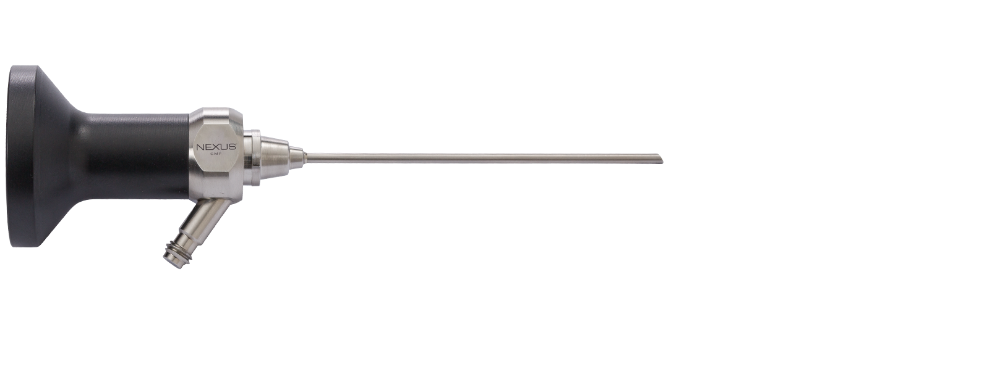
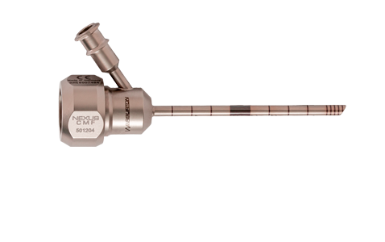
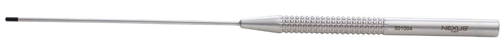
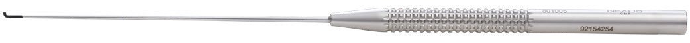
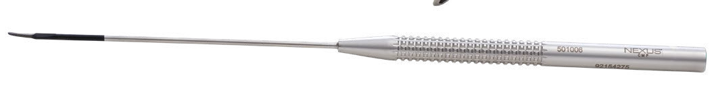

Inside the joint. In control of your view.
Nexus McCain · scope, anatomy, instrument motion and guided learning in one workspace.
Open integrated joint → Synchronized anatomy, motion & fluid coupling
Click a visible surface to identify it in the separate anatomy view. Drag to turn the scope.
Checking camera position…
30° lens direction sweeps around a fixed shaft. The lens point stays fixed; this is an optics exercise.
Arrow keys · R resets
Joint & scope locator
RIGHT TMJ● Lens tip△ View cone · 65°Green: superior · Gold: inferiorS Superior · A Anterior · L Lateral
Joint-centred teaching view. Three opaque surfaces; display gaps enlarged. Blue: lens and viewing cone. Purple: model-boundary crossing, not a registered skin portal. Short shaft symbol; full device remains in the instrument bench.
Take the joint apart. Keep your bearings.
Separated view moves copies of the tissues for learning. It does not open the joint or increase space for an instrument. The scope image, assembled locator and sections keep the original anatomy.


McCain arthroscope · Nexus 501200
A real hardware reference alongside the model. The 3D telescope uses the published shaft dimensions and recognizable profile; its proximal housing proportions are estimated from the photograph.
Archived manufacturer specifications additionally confirm 115 mm overall telescope length. The current proximal body uses that axial extent; contours and the exact datum remain estimated. The cannula is shown as a source photograph. Its catalog designation “1.9 mm” does not establish its outside diameter. Exact tip shape, assembled lens offset and cannula fit still require calibrated measurements.
Manufacturer specifications & original images ↗Photos © Nexus CMF, used as attributed references. Procedural 3D illustration is not manufacturer CAD.
Portals · anatomical registration still needed
A skin entry point, a capsule crossing and the optical axis are different things. This model has no registered skin, tragus, canthus, ear canal or neurovascular structures. A real portal pivot cannot yet be placed on this head with measured accuracy. The current controls explore fixed lens points; they do not rehearse insertion.
Sagittal
Coronal
Blue dot: lens · dashed cross: the other plane / lens height. The arrow is a projection, not a path in the tissue. Planes stay anatomical when the view turns. Grid: 1 mm.
Discrete point views; no insertion path is simulated. The Nexus telescope envelope uses published shaft dimensions. Its exact tip, assembled cannula geometry and relation to a skin portal are not validated. Nearest tissue at this point: …. Translucency applies only to the map.
Link to this exact view · Preserved r30 · Preserved r29 · Unchanged r26 camera · Labelled static fallback · Exact contour data

Compare views, clipping & limits
All three views use the same opaque tissues, colours, lighting, 65° circular field and 0.010 mm near plane. Roll turns the 30° viewing direction around the selected shaft axis. Reset restores zero roll, the selected view, map and anatomy explorer; select Original for the previous published pose. No transition through tissue is shown.
Section axes: A anterior, P posterior, M medial, L lateral, S superior, I inferior. Sagittal screen-right is −Y; coronal screen-right is +X; screen-up is +Z. Out-of-plane values are components of the unit viewing vector, without length units; the angle is measured from the section plane. An in-plane component below 0.000001 suppresses the direction arrow. The 3 mm arrow is a scaled direction annotation, not a collision-tested path.
Each contour segment is a direct plane/triangle intersection of the same Float32 vertices used by the 3D renderer. Full-precision preset coordinates define the planes. Open surfaces remain open; no missing tissue is interpolated or filled. These additional six cuts do not replace the earlier 78-section stack. Reset restores the selected reference direction, joint map and section context zoom.
| Reference | Roof / disc | Mask rays | Median hit | Nearest tissue |
|---|---|---|---|---|
| Original | 45.4 / 28.5% | 8.7% | 0.555 mm | 0.156 mm |
| Medial | 48.1 / 50.3% | 0.0% | 1.307 mm | 0.192 mm |
| Anterior | 47.4 / 48.0% | 1.7% | 1.001 mm | 0.200 mm |
Repeatable pose
Model axes: +X lateral, +Y anterior, +Z superior. The source geometry, contact, cavity and computational masks are unchanged. No cut planes, internal transparency or back-face removal.
What is established?
Each selected point is inside the numerical superior envelope and outside the tested solids. Its entire near plane stays in an empty local sphere at every allowed direction. Dense checks with 20,081 rays confirm the reference-field measurements; no sampled hit is lost to near clipping.
The new views show a broader roof–disc relationship, but these are model surfaces, not validated clinical landmark recognition. Synovial lining and fascia remain unreconstructed, and attachments are estimates. A zero mask-ray count in one view does not complete the anatomy. No scope fit or safe portal is established.
Position audits & source hashes · Earlier 78-section stack (nearest planes)
Move the shaft. See what stops it.
Independent geometric bench. The amber pivot is a candidate crossing of the estimated capsule from the r27 audit. It is not a skin portal. The internal scope above stays at its selected reference position.
Preparing triangle surfaces…
501200 telescope: published 1.9 mm diameter and 63.1 mm working length. Cannula and proximal housing are outside collision coverage.
Collision coverage
The rigid cylindrical envelope uses full working length. Pure insertion uses an exact union; pivot changes use conservatively padded samples. A blocked sweep may be an overestimate. No skin, vessels, ear canal, cannula, proximal housing or tissue deformation is included. No “safe access” result is produced.
Explore what the measurements actually show.
Recorded jaw trajectories, human disc properties and joint-pressure experiments. Switch between the measured data and their clearly labelled geometric or mechanical models.
Loading measured trajectories…
1,500 published motion samples
MEASURED · 5 SUBJECTSPlayback takes 8 seconds by display choice. The published time axis is cycle percentage; it does not establish real speed.
Frames, rotation convention & provenance
Bescond et al., 2023: five healthy subjects, optical markers with MRI-derived bone models; processed, smoothed series with 100 normalized samples per movement. Translations are in mm. The three axes retain the publication's signs. Left and right frames have different orientations.
OVP means Orientation Vector Position. Rotation values are exported unchanged in degrees; they are not assigned as XYZ Euler angles. These subjects are not registered to the head above, and the dataset contains no disc or capsule deformation. Published landmark-fusion median RMSE is 8.0 mm.
Gaël Bescond · original data, CC BY 4.0 ↗ · Converted data, original values & source checksum
Two portals. One visible working target.
GEOMETRIC BENCHSynthetic planar skin, dimensions in mm. The viewing axis is 30° from the Nexus shaft, with a 65° field. The working shaft is normal to the plane.
The construction illustrates triangulation; its selectable dimensions are engineering examples, not population measurements or insertion instructions. The working target sits beyond the lens, so optical direction and shaft intersection are distinct.
Measured portal differences & device dimensions
| Portal | Horizontal difference | Vertical difference |
|---|---|---|
| Posterior fossa | 0.7 ± 1.5 mm anterior | 2.1 ± 3.9 mm superior |
| Anterior recess | 10.2 ± 4.7 mm anterior | −7.4 ± 4.9 mm inferior, as reported |
The public abstract does not identify the ± statistic or fully resolve the anterior vertical sign. These are differences, not coordinates or safe intervals; no point is transferred to the head.
Choi · primary abstract ↗ · Abboud · triangulation construction study (Storz equipment) ↗
Nexus 501200 telescope: published 1.9 mm diameter, 63.1 mm working length, 30° direction and 65° field of view. 501201 / 501204 cannula: outer diameter, inner diameter, tip bevel and lens-seat offset remain unverified after checking manufacturer material and FDA device records. A nominal “1.9 mm” compatibility label is not an outer-diameter measurement.
Portal evidence and exclusions · Cannula search and unresolved dimensionsA disc region changes the response.
HUMAN TISSUE · 12 DONORSCalculated incremental compression after a stress step. Each curve approaches 2% additional strain; each region therefore requires a different load.
Benchmark: 5 mm diameter × 1.4 mm high plug, drained top and impermeable base. Linear biphasic calculation using group means; the displayed curves are not recorded specimen traces.
| Region | Aggregate modulus HA (kPa) | Permeability k (10⁻¹⁵ m⁴/N·s) |
|---|
Experiment & calculation
Twelve male cadaver discs, mean age 78 years; specimens frozen before testing. Superficial layers were removed to create flat plugs. A 10% offset strain was equilibrated before two-hour creep testing. These coefficients describe confined compression and interstitial fluid transport. They are not an unrestricted Young's modulus or joint irrigation flow.
The benchmark applies incremental stress HA × 0.02. Hydraulic diffusivity D = HAk. With drainage length h, the first-mode time constant is 4h²/(π²D). Compression is calculated from the odd-mode series solution of the one-dimensional diffusion problem. No coefficient is assigned to the unsegmented disc mesh above.
Kuo et al. · primary study ↗Source pressure is not joint pressure.
TWO SEPARATE EXPERIMENTSFixed 0.2 mL bolus · historical human pressure–volume regression. Peak pressure is calculated, not a live joint-pressure reading.
Bolus experiment
Kakudo 1993: five healthy men aged 20–24, 10 mm mouth opening, rapid 0.2 mL injections of 1% lidocaine into the upper compartment. Regression uses 18 observations.
Pressure–volume equation & scope
IAPVI = 0.001P₀ + 0.538 mL; IAPVI = ΔV / log₁₀(Ppeak/P₀). Therefore Ppeak = P₀ × 100.2/IAPVI. Pressure units in the regression are mmHg. The displayed 5–60 mmHg range stays within the approximate plotted range; it is not a recommended pressure range.
The study describes bolus peaks, not steady saline flow, leakage, a pressure-decay time constant or distension of this mesh.
Kakudo · primary study ↗Continuous lavage · independent measured comparison
Xu 2013: source pressure 27.575 kPa; 500 mL total lactated Ringer's throughput, not retained joint volume. These are different devices and patient groups, not Nexus cannula measurements. Absolute flow and a compliance curve are not recoverable from these values.
Xu et al. · measured joint pressures ↗Fluid and tissue evidence, units and excluded extrapolations
A skin portal needs its own landmarks.
Published cadaver work compared 7/2 and 10/2 mm alternatives, with results related to the length of the reference line. A universal point cannot be transferred to an unregistered head.
Skin entry, capsule crossing and optical direction are three different locations or directions. The model has no measured tragus, lateral canthus, skin or neurovascular geometry.
Talaat et al. · primary cadaver study ↗Recognize the real instruments.



Original catalog images © Nexus CMF. These show the real profiles; exact tip radii, working lengths and measured outer envelopes were not established. The motion bench labels its approximate probe dimensions explicitly.
Camera, couplers, tower & instrument references

ClearView camera 501251 · tower 501252 · variable couplers 501253 / 501263 (16–34 mm) · fixed coupler 501262 · monitor 501264 (21.5-inch). Equipment identities do not establish a connection or calibration procedure.
Original product guide · Source and dimension manifestBuild a mental map of the joint.
Seven-landmark survey
- Medial synovial drape Lining not reconstructed
- Pterygoid shadow Not validated in this model
- Retrodiscal synovium Posterior tissue estimate only
- Posterior slope of eminence / glenoid fossa Inspect temporal roof
- Disc Inspect source-derived disc
- Intermediate zone Inspect disc; no accepted zone segmentation
- Anterior recess Explore anterior reference; lining unresolved
Orientation check
Six questions about anatomy, optics and model interpretation.
Practice history
Inspect the source volume.
Open a scalar NIfTI-1 .nii or .nii.gz file. File bytes stay in this tab. The three views use native voxel axes I / J / K; oblique acquisitions are not presented as anatomical sagittal, coronal or axial cuts.
No scan loaded. The model-linked sections above are mesh sections, not medical images.
Volume hash & voxel-to-world transform
Check a model-to-image registration contract
A JSON contract must match the SHA-256 of the uncompressed NIfTI and current anatomy, identify subject and jaw pose, and contain a proper rigid matrix in mm. This checks structure and provenance fields; it does not verify anatomy or enable a clinical overlay.
No registration loaded.
Contract example / required fieldsWhat this build can establish
Available now
Calibrated-angle Nexus optics, synchronized anatomy, exact mesh sections, visible-surface identification, shaft-envelope checks, practice records, local scan inspection, published jaw trajectories and separate quantitative mechanics labs.
Needs measured inputs
Same-joint imaging and jaw pose, accepted tissue segmentation, skin portals, assembled cannula dimensions, registration of measured motion, tissue coefficients and pressure–volume behavior to this joint.
Needs clinical evaluation
Landmark recognition, instrument handling, expert assessment and learner outcomes. No clinical competency or surgical-safety claim is made.
Natural shading changes material and lighting only. It does not add synovium, alter tissue geometry or establish clinical appearance. The striped computational boundary remains visible.
Build capabilities and evidence · Preserved r33 workspace · Preserved r32 workspace · r31 referenceThe r34 integrated joint adds shared-geometry movement, a pressure-driven wall mode and conservative lumped flow. Its kinematics and wall law are engineering assumptions; registered patient mechanics remain unresolved.